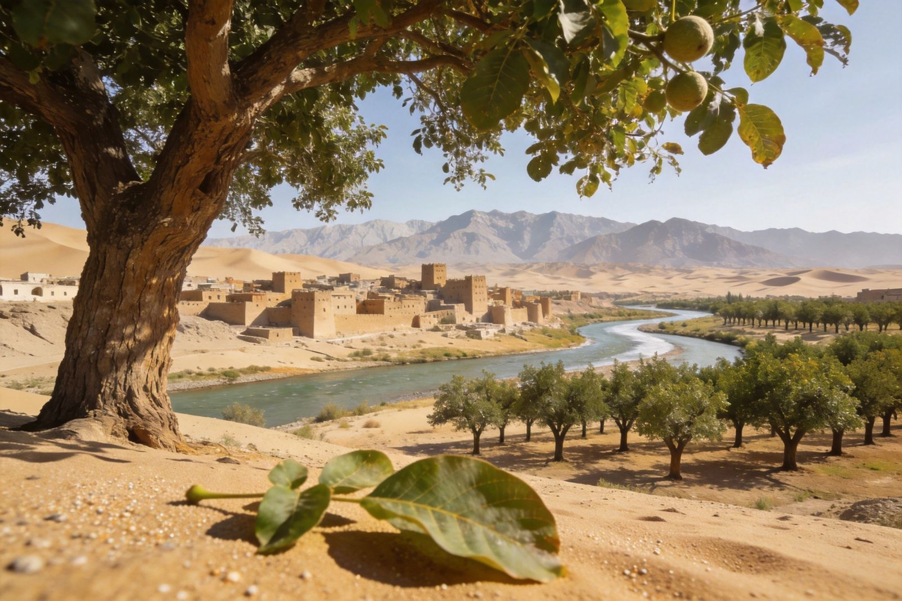
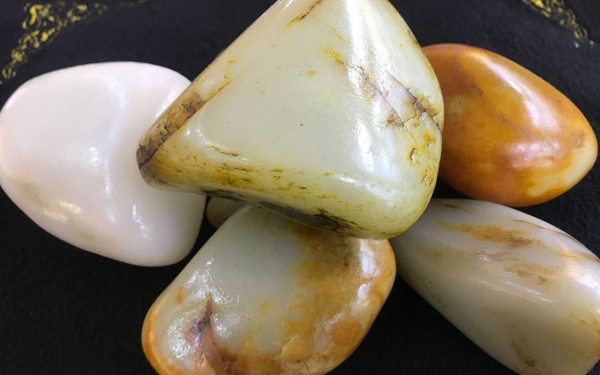
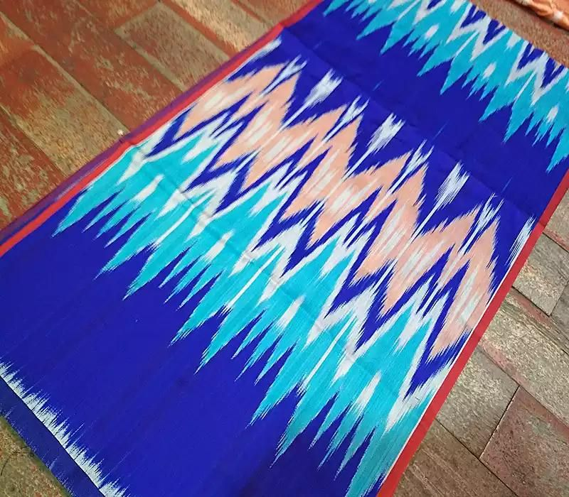
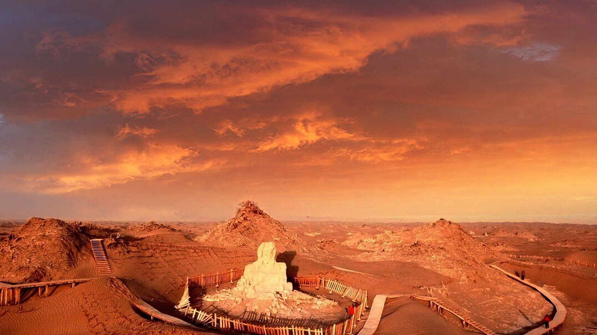
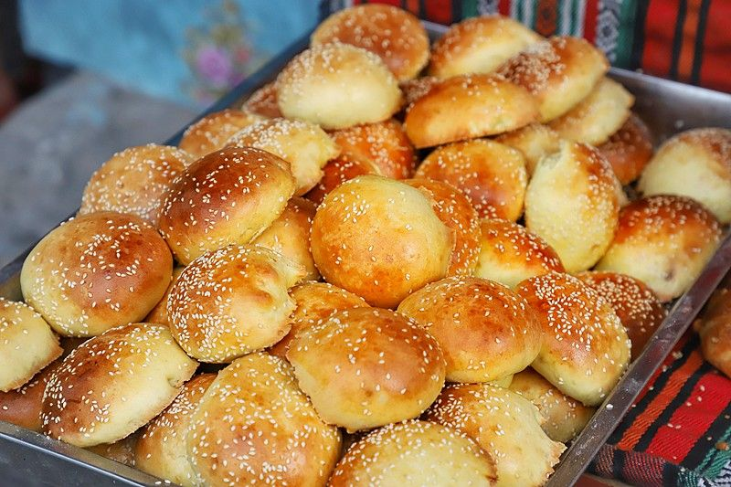

封面
总览
行前·交通·住
Day1
Day2
Day3
Day4
美食清单
组合·贴士
安全提示

玉都南疆 · HETIAN
和田
玉龙喀什河 · 艾德莱斯绸 · 尼雅遗址 · 葡萄长廊
玉龙喀什河
和田玉
团城阿依旺
艾德莱斯绸
尼雅遗址
葡萄长廊
新疆 · 和田
A5 口袋手册
· 丝路玉都 · 逛城拾味
1
/ 10
和田
动线总览
寻玉 · 织绸 · 探秘南疆
Route Overview
06
清晨 玉龙喀什河淘玉
河滩摸玉、寻一块和阗籽玉，赌石的市井乐趣
10
上午 和田玉巴扎 · 团城
玉石集市、阿依旺院落、手工作坊一条街
15
午后 艾德莱斯绸 · 葡萄长廊
吉亚乡织绸、千里葡萄长廊、核桃王树
TIP
和田古称"于阗"，为和田玉故乡；玉龙喀什河两岸是历代采玉、淘玉的现场。
TIP
艾德莱斯绸与和田地毯同为国家非遗，南疆岁月的丝路玉都烟火最动人。
2
/ 10
和田
行前准备
行前准备 · 交通 · 住
Before You Go
🚄 怎么去 · 住哪
飞机
：和田机场有乌鲁木齐等航班，直飞或经乌市转机
或从
喀什
自驾/乘车约6小时穿行南疆
市区宿
玉龙喀什镇
或团城周边民宿，晨起淘玉近
🎒 必带
南疆气候
干燥多风沙
，防晒霜/帽子/墨镜必备
玉石购买认准
正规玉店
，莫贪低价
艾德莱斯绸、和田地毯可作伴手礼

和田玉籽料 · 温润而泽
3
/ 10
和田
Day1
Day1
玉河淘玉 · 寻玉之旅
玉龙喀什河
➜
河滩淘玉
➜
和田玉巴扎
➜
团城
玉龙喀什河 · 温润籽玉
🏞 玉龙喀什河淘玉
和田玉主产地
，清晨河滩常有淘玉人
可亲手
河滩摸玉
，全看眼力与运气
细看籽料皮色、油润度与结构
💎 和田玉巴扎 · 团城
玉石集市玉器、雕件琳琅
团城阿依旺
民居庭院错落，非遗手作
石·木匠人作坊，桐油土陶待淘
TIP
和田古称"玉石之都"，玉龙喀什河淘玉看缘分，玉巴扎购买认准正规店。
4
/ 10
和田
Day2
Day2
织绸 · 葡萄长廊
艾德莱斯绸厂
➜
吉亚乡作坊
➜
葡萄长廊
➜
核桃王

艾德莱斯绸 · 扎染织锦
🪢 艾德莱斯绸 · 吉亚乡
新疆传统扎染织绸
，丝路"三大丝都"之一
在
吉亚乡
手工作坊看蜡染·织造全流程
绚丽斑斓，为国家
非遗
🍇 千里葡萄长廊
和田绿洲
世界最长
葡萄长廊
葡萄架遮天蔽日，绿洲农业奇观
核桃王树千年古树瞻仰
TIP
艾德莱斯绸色彩斑斓可作伴手礼；葡萄长廊夏日绿荫蔽日，适合骑行漫游。
5
/ 10
和田
Day3
Day3
尼雅遗址 · 精绝探秘
尼雅遗址
➜
塔克拉玛干
➜
沙漠观景
➜
返程

尼雅遗址 · 沙漠中迷失的精绝国
🏜 尼雅遗址（可选一天）
古
精绝国
故城，"沙漠庞贝"
出土
"五星出东方利中国"
织锦（原件在新疆博物馆）
需自驾/包车，深入塔克拉玛干北缘
🌵 塔克拉玛干风光
和田段沙漠观景台眺望沙海
热瓦克佛寺（南北朝·唐代）碦陀罗风
拉里昆湿地
红柳胡杨，鸟影
TIP
尼雅间生态原始，路况复杂建议包车或随团；"五星出东方"国宝原件在乌鲁木齐博物馆。
6
/ 10
和田
Day4
Day4
夜市拾味 · 烟火回响
和田夜市
➜
烤包子老店
➜
玉龙喀什镇
➜
返程

玉龙喀什镇 · 烤包子老店
🔥 和田夜市
炭火羊肉串
大块过瘾，孜然喷香
烤包子
（玉龙喀什镇老店60年）外酥里嫩
烤三蛋、烤南瓜、杂克尔尽兴尝
🍇 时令水果
和田大枣、纸皮核桃、巴旦木、杏干
无花果、石榴入秋最甜
葡萄干、甜瓜摊边现切现尝
TIP
和田夜市入夜最热闹，走一路吃一路；烤包子配砖茶解腻最地道。
7
/ 10
和田
美食清单
吃在和田 · 南疆味
Eat · Local
🥩
烤包子 / 烤串
玉龙喀什镇老店 · 羊肉串孜然
🍚
抓饭 / 大盘鸡
羊肉抓饭油润，大盘鸡下饭
🍇
葡萄 / 无花果
绿洲果香，入秋最甜
🌰
核桃 / 红枣
纸皮核桃、和田大枣驰名
🍞
馕 / 烤三蛋
主食馍馕，炭火烤蛋
TIP
和田葡萄、核桃为地方名品，羊肉串与炭火烤包子是南疆味道，入夜夜市最热闹。
8
/ 10
和田
组合玩法 · 出行贴士
经典路线 · 出行贴士
Route & Tips
黄金组合 · 行前必知
💎 寻玉一日
玉龙喀什河＋玉巴扎＋团城
核心必玩
🕒 最佳季节
春秋最宜，夏热冬干
出行
🍇 绿洲两日
艾德莱斯绸＋葡萄长廊＋尼雅
深入
🪢 伴手礼
和田玉、艾德莱斯绸、核桃枣
特色手信
TIP
和田干燥多补水；玉石认准正规店勿贪便宜；南疆景点分散，自驾或包车最宜；沙漠地带防风沙。
9
/ 10
和田
安全提示
安全与实用提示
Stay Safe
💧
干燥防沙
多补水，外出戴口罩防风沙
💎
玉石购物防坑
认准正规店，勿贪低价
🕌
尊重民俗
清真餐饮勿外带，入寺守规
🚗
沙漠行车
尼雅等沙漠路段跟熟路司机
和田「WorldStip」祝你玩得开心 🍇
10
/ 10
WorldStip · 和田 / 玉龙喀什河 · 和田玉 · 艾德莱斯绸 · 尼雅遗址 · 葡萄长廊 · 数据以景区当日公示为准
Insta360
记录美好
记录美好生活
相机指南 · CAMERA GUIDE